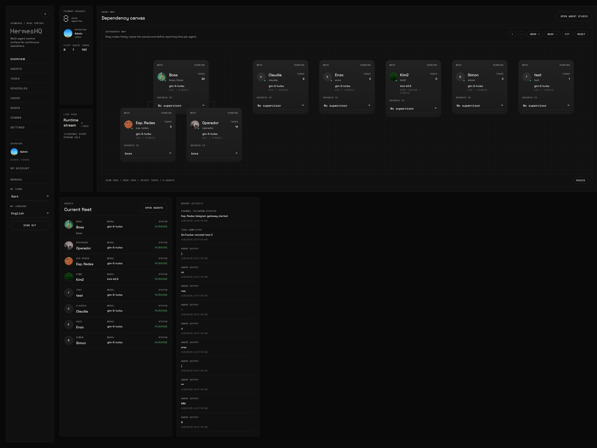
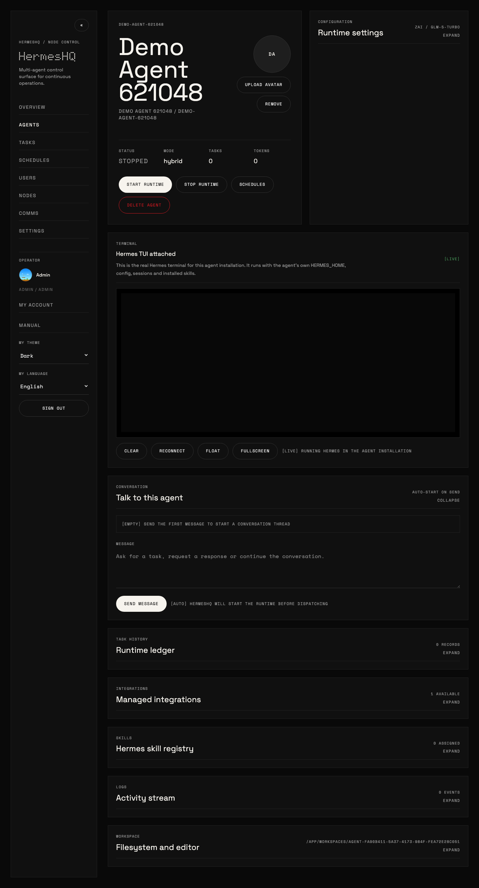
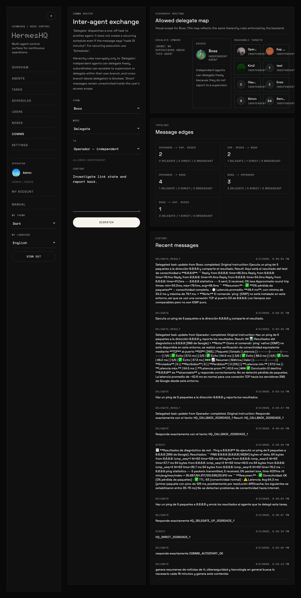
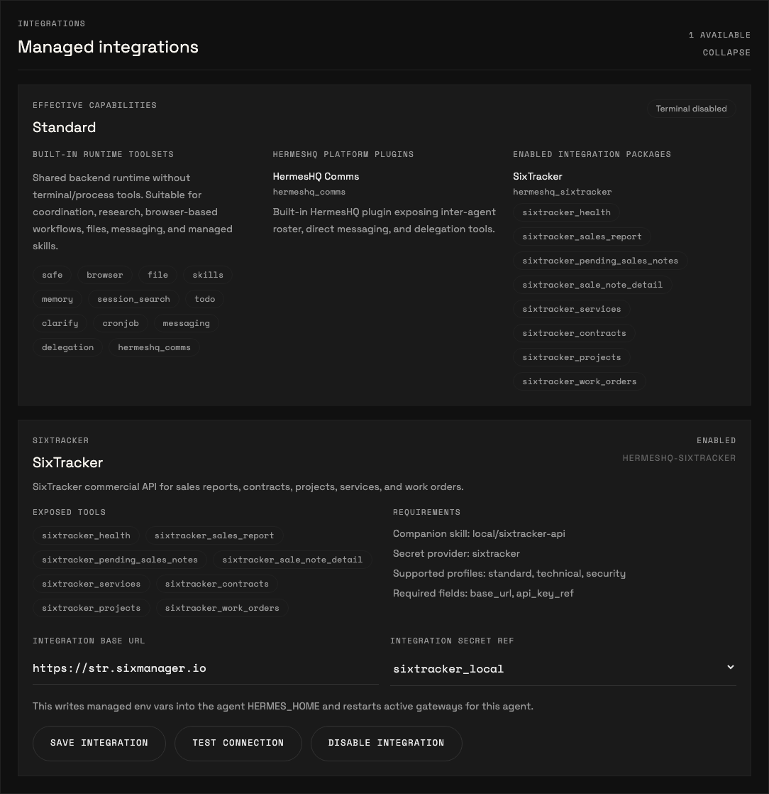

Hermes Agent alone
Single runtime used directly
Local CLI/TUI usage, one local HERMES_HOME, direct prompt and plugin handling, and operator-managed local sessions.
Docker-first / Managed Hermes runtimes
HermesHQ keeps Hermes as the real execution engine, then adds the layer teams actually need in production: managed agents, tasks, schedules, Telegram, hierarchy-aware delegation, runtime profiles, and managed integrations.
Positioning
HermesHQ does not replace hermes-agent. It orchestrates it. Hermes alone is the execution engine; HermesHQ adds the multi-agent control plane around it.
Hermes Agent alone
Local CLI/TUI usage, one local HERMES_HOME, direct prompt and plugin handling, and operator-managed local sessions.
HermesHQ
Separate workspaces per agent, RBAC, tasks, schedules, runtime ledger, comms, Telegram, runtime profiles, provider presets, secrets, and managed integrations.
Operational surfaces
The product surface is intentionally dark, information-dense, and operational. These are real screenshots from the running app.




Runtime model
HermesHQ uses Hermes as the real runtime, then standardizes how agents are configured, run, supervised, and traced.
Runtime profiles
Profiles define effective capabilities. In the current phase, standard already blocks TUI and terminal/process usage, while technical and security profiles keep full operator workflows.
Managed integrations
Integrations are installed as packages, enabled per agent, and tested from the UI. This keeps API-based business integrations separate from core runtime concerns.
Hierarchy-aware comms
Delegation is not cosmetic. Independent agents can delegate freely, escalation upward works, downward delegation within branch works, and cross-branch lateral delegation is blocked.
What the demo shows
The demo page uses a real player with controls and focuses on the surfaces that make HermesHQ feel like an operating console rather than a settings shell.
Create a new agent from the built-in runtime profile flow.
Open the agent detail surface and enter the real Hermes TUI.
Float and fullscreen the TUI to show the runtime as an operational surface, not just a text panel.
Review managed integrations and effective capabilities on a standard-profile agent.
End in Comms with hierarchy-aware delegate routing visible before dispatch.
Demo page
GitHub README is fine for documentation, but not ideal as a product presentation layer. This landing and the separate demo page carry the darker, more intentional HermesHQ feel.
Install
HermesHQ installs and runs with Docker by default. The installer downloads the current branch tarball, writes or reuses .env, and runs docker compose up --build -d.
One-line install
curl -fsSL https://raw.githubusercontent.com/jpalmae/hermeshq/main/install.sh | bash
If the server has multiple interfaces, pass HERMESHQ_HOST explicitly with the public IP or DNS name.
What you get
Docker-managed PostgreSQL, persistent workspaces, generated bootstrap credentials when needed, and a backend/frontend pair ready to expose through your preferred ingress.